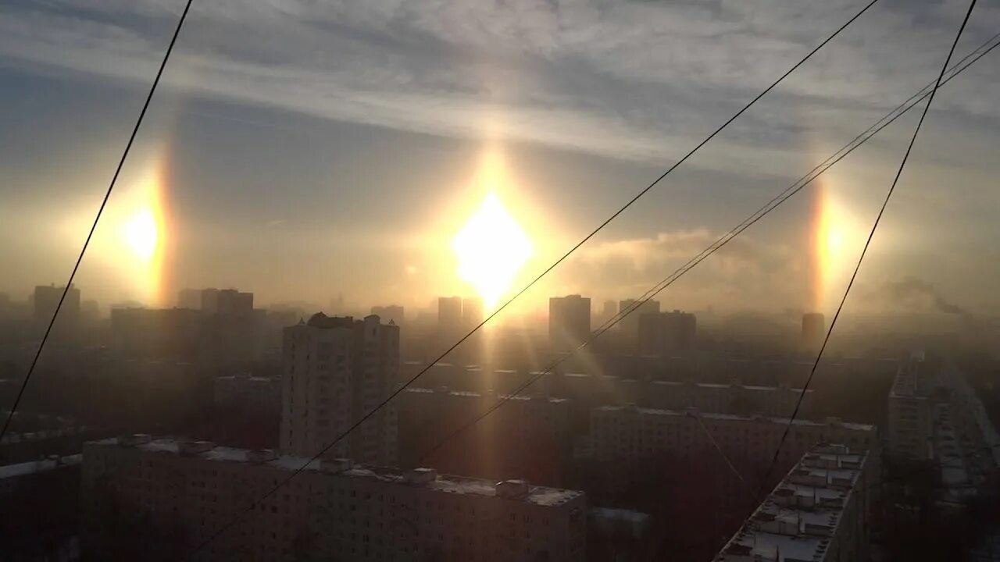

Ложные солнца (паргелий)
1. Как выглядит
По бокам от настоящего Солнца, справа и слева, появляются два ярких пятна. Они выглядят как два дополнительных солнца — такие же круглые, светящиеся, но уступающие настоящему по яркости. Часто ложные солнца имеют радужную окантовку: красную с внутренней стороны (обращённой к Солнцу) и голубую или зелёную с внешней. Иногда видно только одно ложное солнце, а не два. Они располагаются на одинаковом угловом расстоянии от настоящего Солнца — примерно на ширину вытянутой руки с растопыренными пальцами. Вместе с ложными солнцами часто появляется светящийся круг — гало — проходящий через все три солнца.
2. История обнаружения и наблюдений
Древние люди пугались ложных солнц и считали их предвестниками катастроф. Древнейшее описание содержится в «Политике» Аристотеля: он упоминает два ложных солнца, виденные в 361 году до нашей эры. В 1535 году над Стокгольмом наблюдали сразу пять ложных солнц — это событие изобразили на гравюре «Стокгольмское небесное видение». Первое научное объяснение дал французский философ Рене Декарт в 1637 году, связав ложные солнца с ледяными кристаллами. В XX веке финский метеоролог Уно Уотила разработал компьютерную модель, которая точно предсказывает, какие атмосферные круги и ложные солнца появятся при определённых формах ледяных кристаллов.
3. Природа явления
В воздухе на высоте 5–10 километров плавают шестиугольные ледяные кристаллики. Они не хаотичны, а медленно падают, ориентируясь плоскими гранями вниз. Солнечный свет входит через боковую грань и выходит через другую боковую грань, отклоняясь на определённый угол. Глаз наблюдателя видит это отклонённое свечение как два ярких пятна по бокам от Солнца. Это не оптический обман, а реальное свечение, вызванное скоплением преломлённых лучей. Явление тесно связано с гало — 22-градусным кругом вокруг Солнца, но ложные солнца гораздо ярче, чем остальные участки гало.
4. Связь с культурой и мифами
В древности ложные солнца внушали ужас. В «Слове о полку Игореве» (XII век) упоминается «кровавое» небесное знамение, которое предшествовало поражению князя Игоря. В 1554 году над Мюнстером (Германия) увидели три солнца — это сочли знаком Божьим, предвещавшим конец религиозных войн. В Англии времён Шекспира ложные солнца называли «солнцами-обманщиками» и считали предзнаменованием смерти королевы. В скандинавской мифологии три солнца связывали с тремя богами — Одином, Тором и Фрейром. В Китае появление множества солнц связывали с появлением ложного императора или смутой.
5. Условия для наблюдения
Нужны тонкие перистые облака или ледяной туман на высоте. Солнце должно быть не слишком высоко над горизонтом — лучше всего утром или вечером, когда оно поднялось не выше 30 градусов. При высоком Солнце ложные солнца уходят далеко в стороны от центра и становятся не видны. Небо должно быть чистым от плотных облаков, закрывающих Солнце. Городской свет не мешает — явление дневное. Смотреть на Солнце без защиты нельзя, но ложные солнца находятся на некотором расстоянии, поэтому можно смотреть на них, прикрывая настоящее Солнце рукой или домом. Яркие ложные солнца заметны даже на фоне яркого неба — они ярче, чем обычные участки гало.
6. Редкость и периодичность
Ложные солнца — явление довольно редкое, особенно яркие и отчётливые. В умеренном поясе (Европа, Россия, Северная Америка) их можно увидеть несколько раз в год, но чаще всего они слабые и неполные. Идеальные условия — очень холодная и ясная погода с тонкими ледяными облаками, когда кристаллы имеют правильную форму и хорошо ориентированы. Чаще ложные солнца случаются зимой и в горах, где воздух чище и холоднее. Явление бывает в Северном и Южном полушариях, но в Южном — реже из-за меньшей площади суши. Ложные солнца не привязаны к времени года, кроме зимы и высоких широт. В Арктике и Антарктике их можно наблюдать чаще, чем где-либо ещё. Некоторые путешественники специально ездят зимой в Сибирь или Канаду, чтобы сфотографировать эту красоту. Следующее яркое ложное солнце над густонаселёнными районами предсказать трудно — за ним нужно просто следить за небом в морозные солнечные дни.
